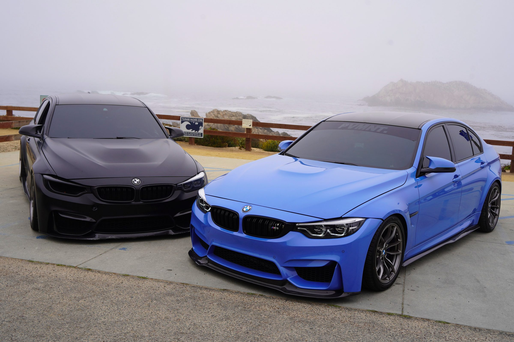
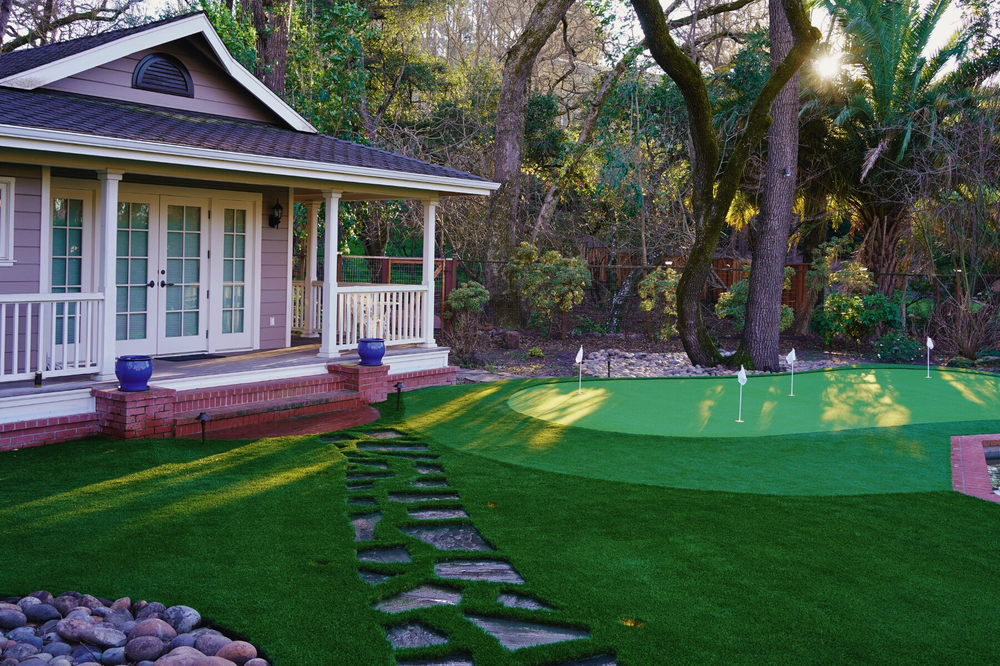
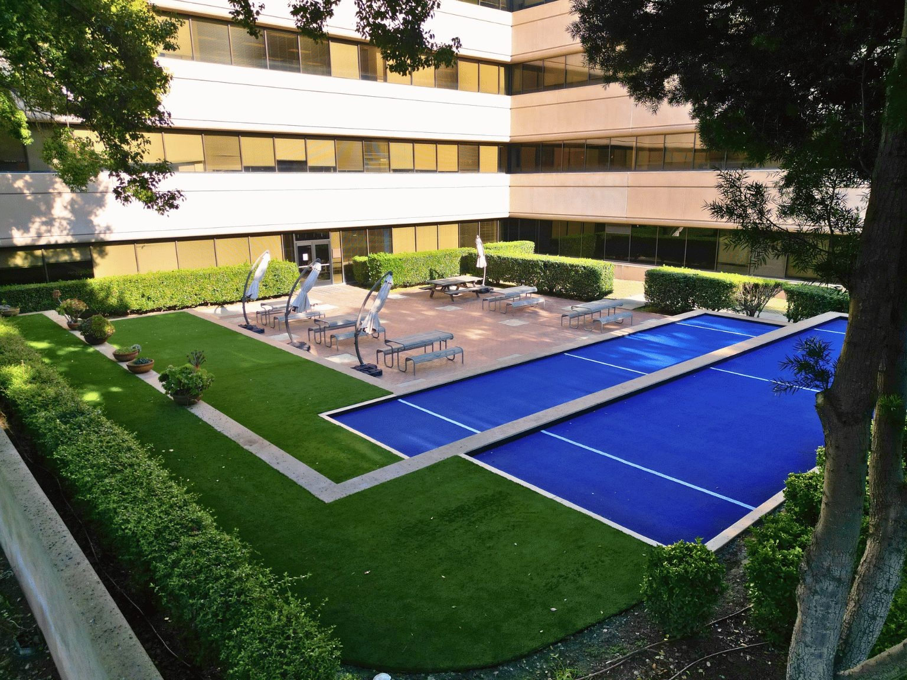
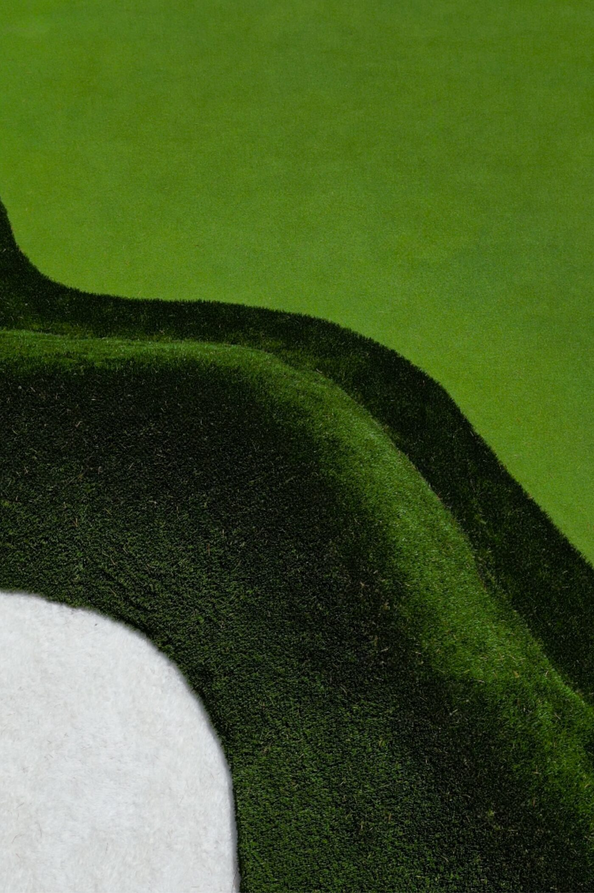
Content Creation · Design · Paid Advertising
Worked With
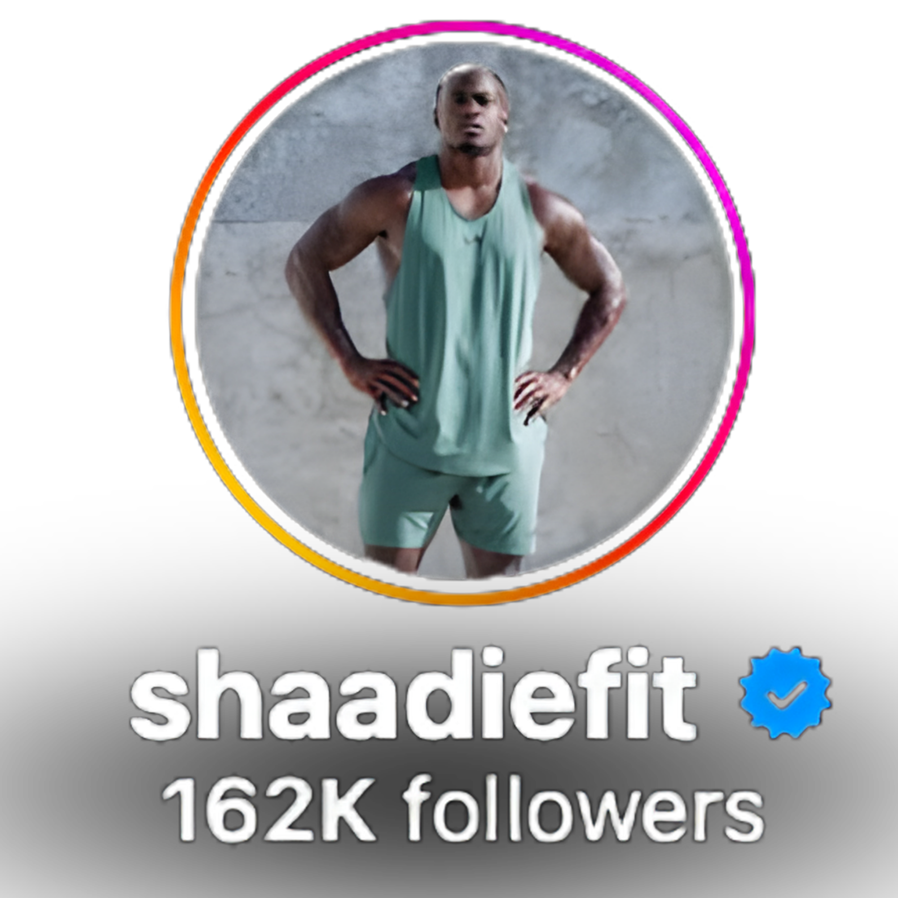
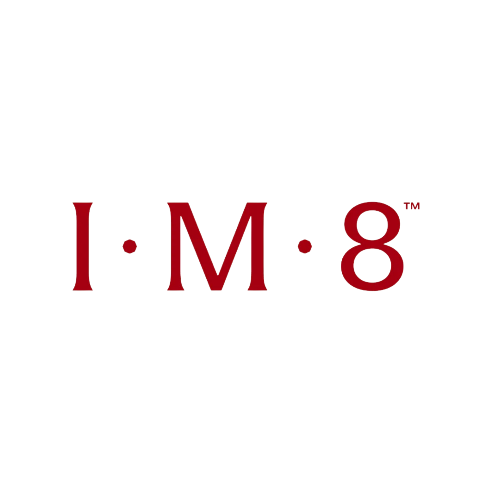
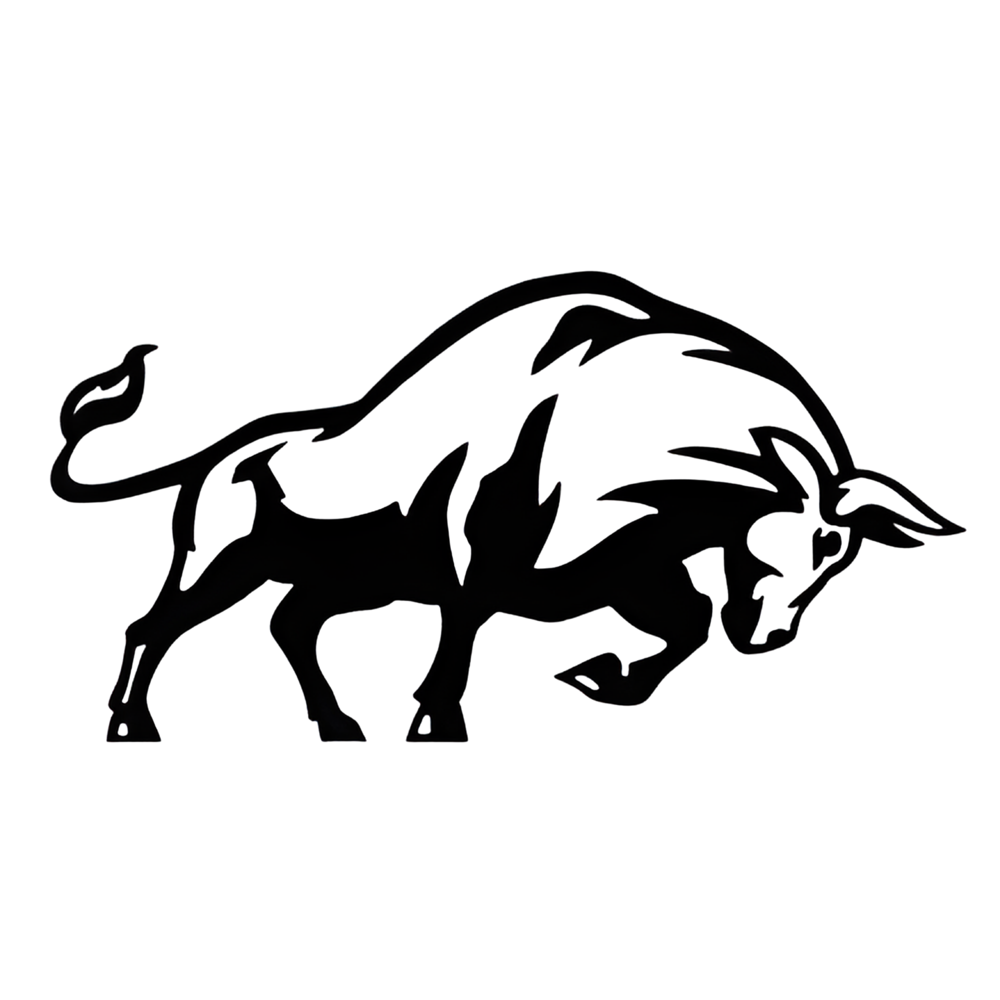
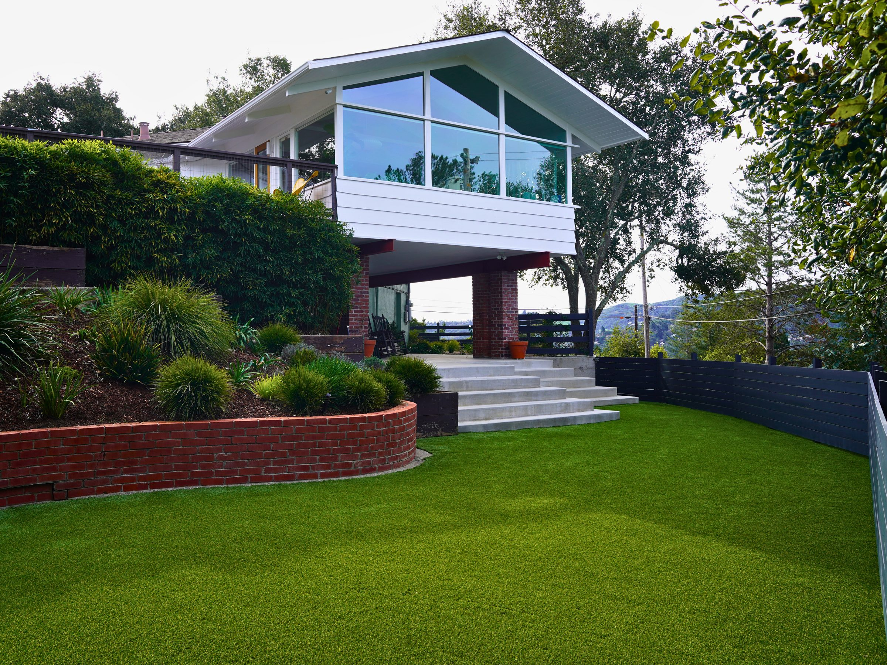
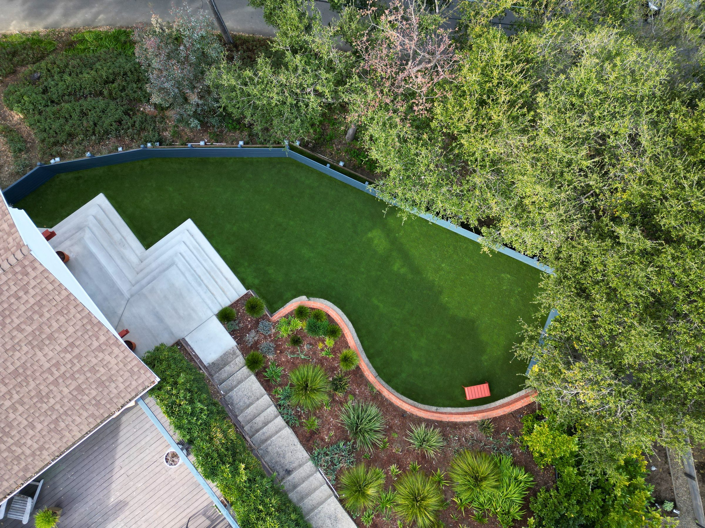
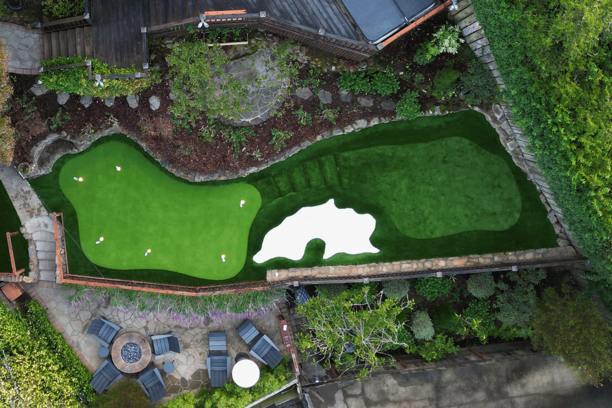
My Live Content
Instagram Reel
Instagram Reel
Instagram Reel
Live Excerpt
Showcase your offers and services in an entertaining light — the kind of content that gets sent in a group chat, not skipped on the feed.
See The Case Studies →Case Studies
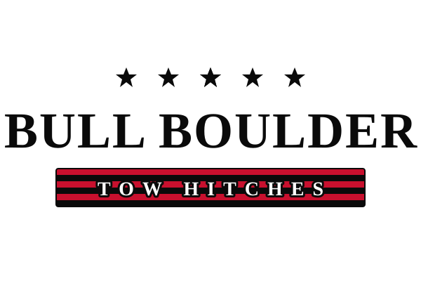
Meta Campaign · Interactive
2 of 5 videos became Meta winners in a category where 1-in-15 is the owner-quoted norm — $60K+ in first-month revenue. Spin the reel wheel inside the study.
Read Case Study →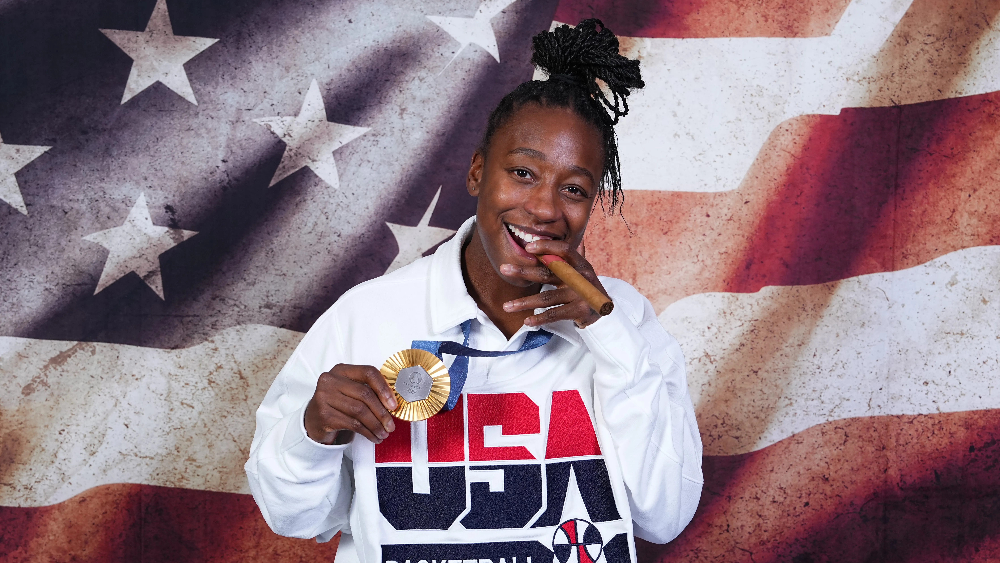
Athlete Collaboration
Collab content for a 1.3M-audience athlete with IM8. Entertaining, brand-safe, and built to fit her page.
Read Case Study →Also worth a look
View All Case Studies →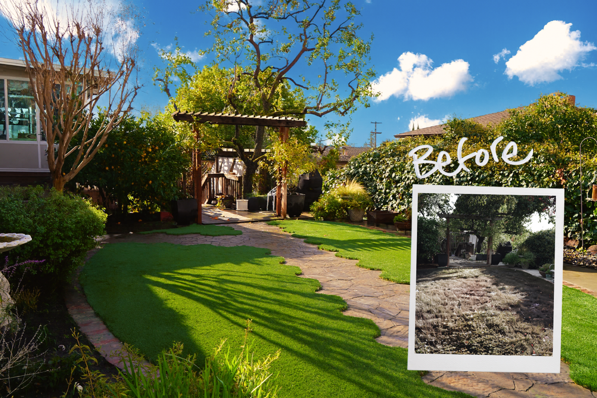
Meta Campaign & Geo-Targeting
Local contractor advertising on Meta — cheap, geo-precise, and untapped next to Google CPC.
Read Case Study →Content Design
Simple hooks, bright reactions, same-day turnarounds. Built for how people scroll YouTube.
Read Case Study →What You Get
Content and creative strategy tailored to your brand, designed to reach the right audience and keep them engaged.
About
Born and raised in California, I grew up in the Bay Area and recently settled in Los Angeles. I care about every request that comes my way, and I treat every project with the same focused, efficient approach, whether it’s a one-off reel or a full campaign.
What I love is watching businesses and people grow, expand their reach, pull in real leads, and see their vision come to life.
Work with meor just email hello@swang.studio